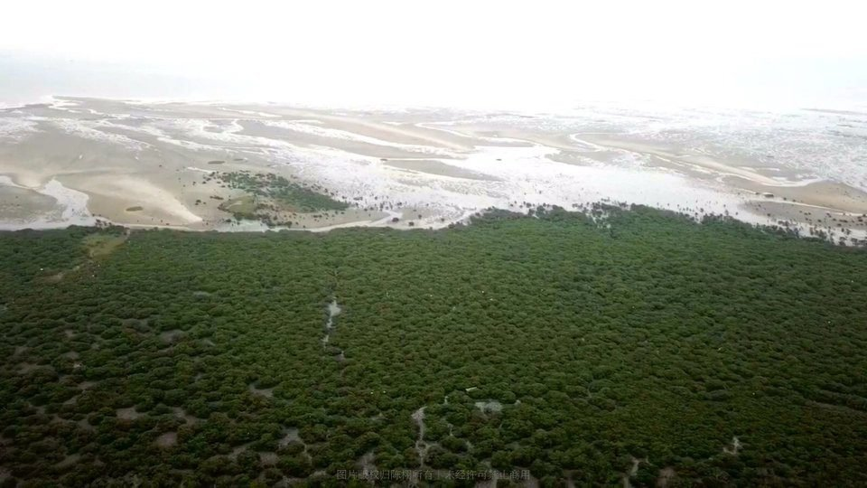
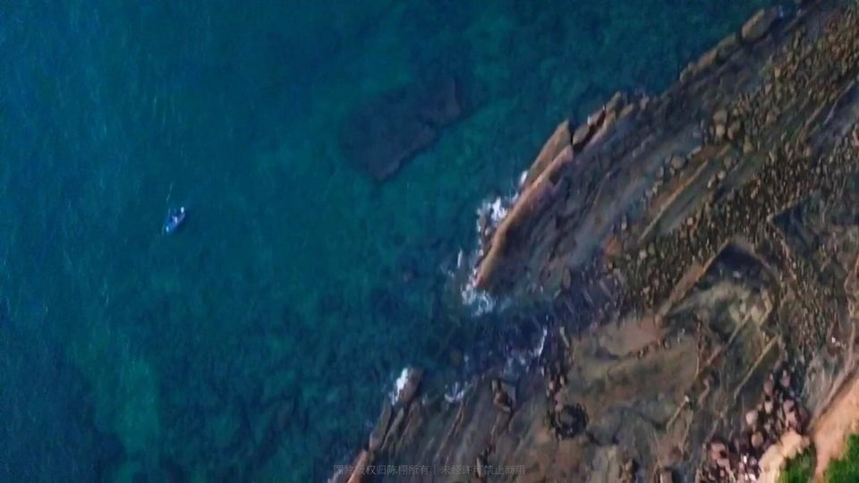
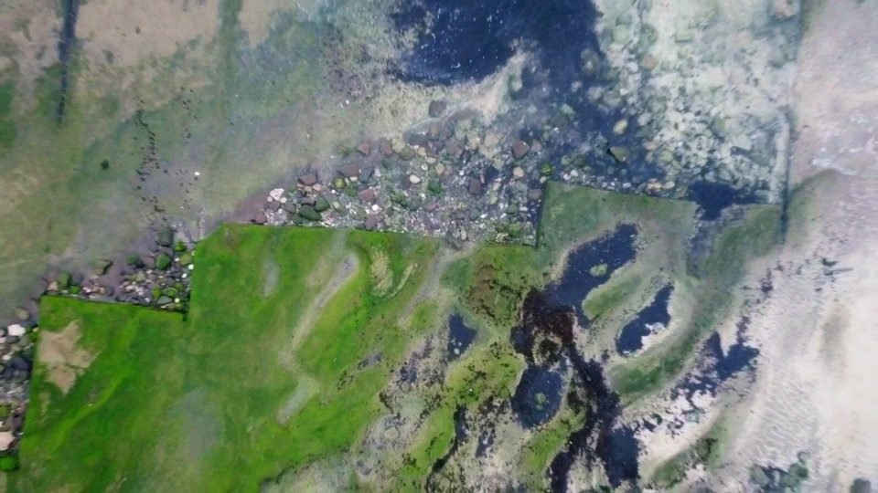
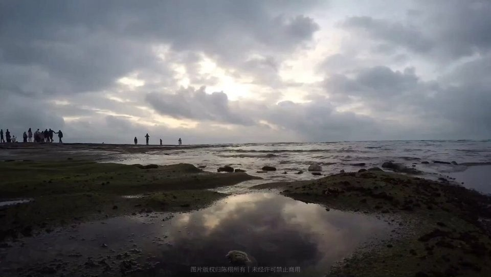
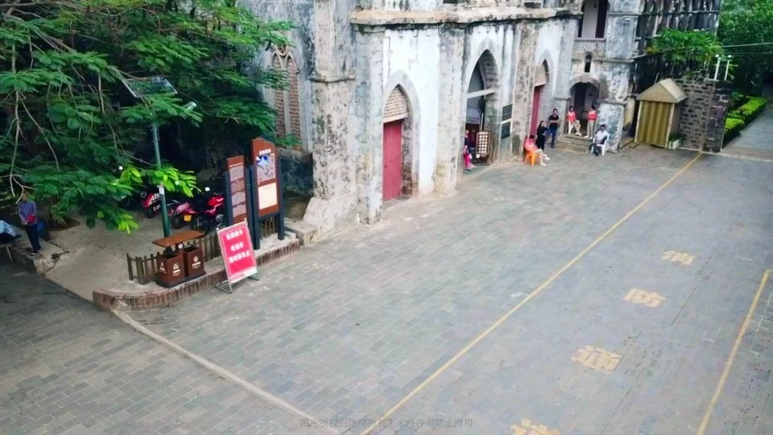
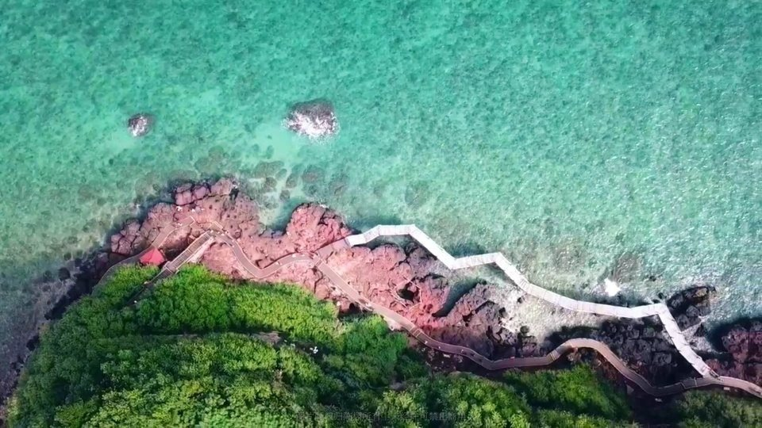
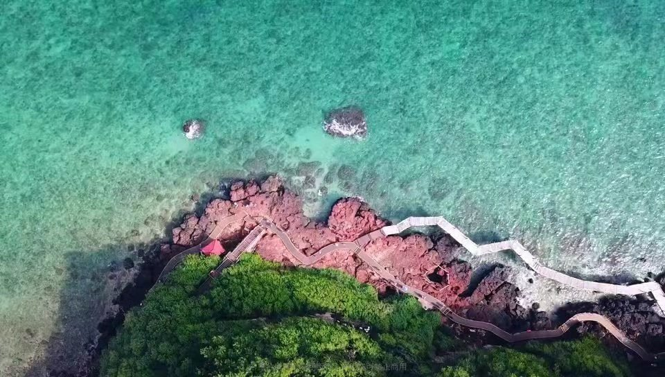
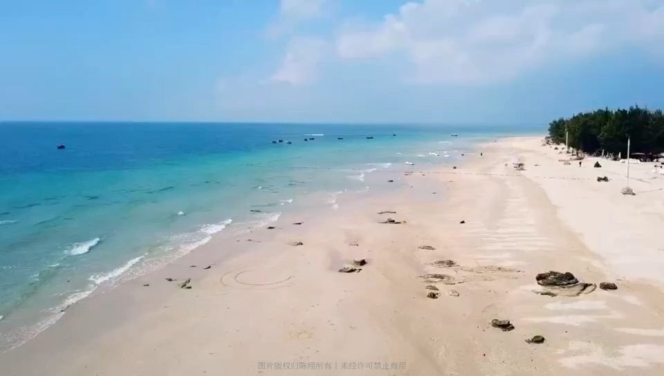
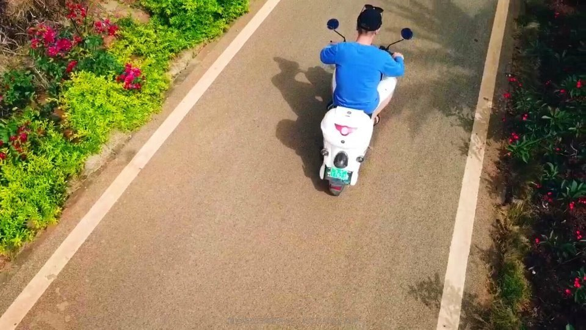

19:24
20年后再次来到广西北海，时间过得太快了…

20年后再次来到广西北海，时间过得太快了…
北海金海湾红树林有两个品种，白骨壤和秋茄，种子落在滩涂地上三小时生根发芽，落在海水里就是种子爱旅行了…

幕崖日落前的海滩

凡所有相 皆是虚妄 若见诸相非相 即见如来

刚刚过去的50分钟，吹吹风听听海，看云卷云舒，想点事……

建于1863年的哥特式教堂是法国传教士为了援助救济广东恩平开平客土两族冲突与迁徙到涠洲岛的客家人一起兴建的。

鳄鱼山火山口

全涠洲岛最漂亮的点

滴水村水上项目多

离开涠洲岛之前再拍一下我的交通工具
这次用的无人机是大疆 御MAVIC，与遥控器的匹配提升了不少，一次也没有要求做指南针校正。这次尝试了几种模式，一键成片、智能跟随……也尝试了高空定点俯视，对于后期编辑也有新的心得，无人机真是好玩的东西，视野、高度、变化都会带来非常独特感受。同时也没想到涠洲岛有这么漂亮的海水，飞拍愉快！
留言